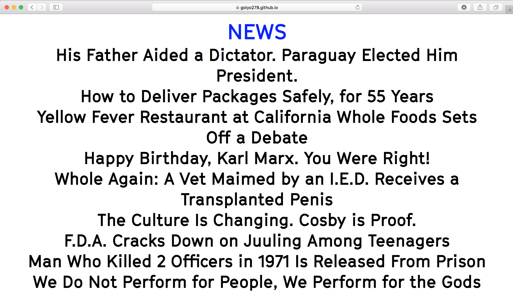
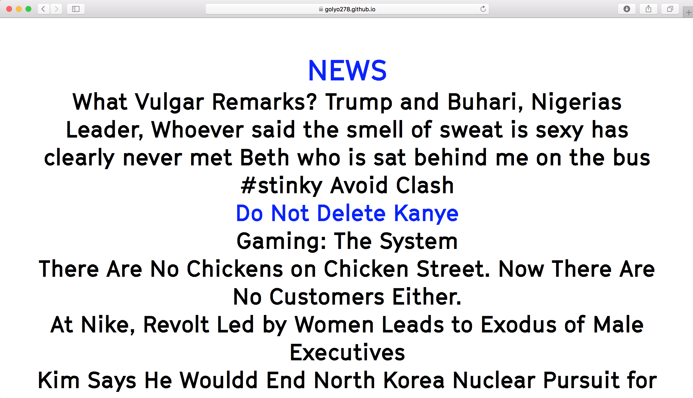
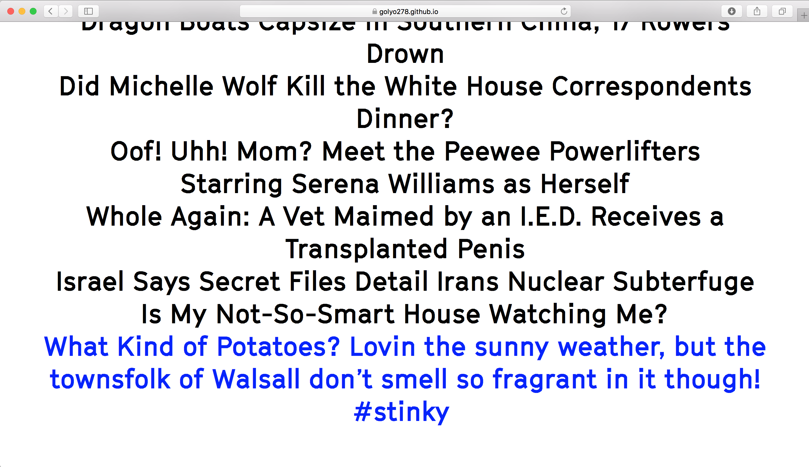
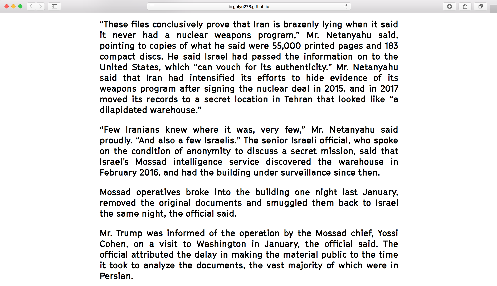
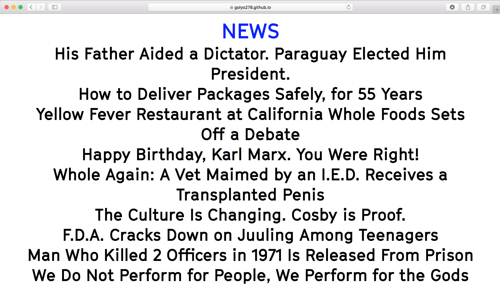
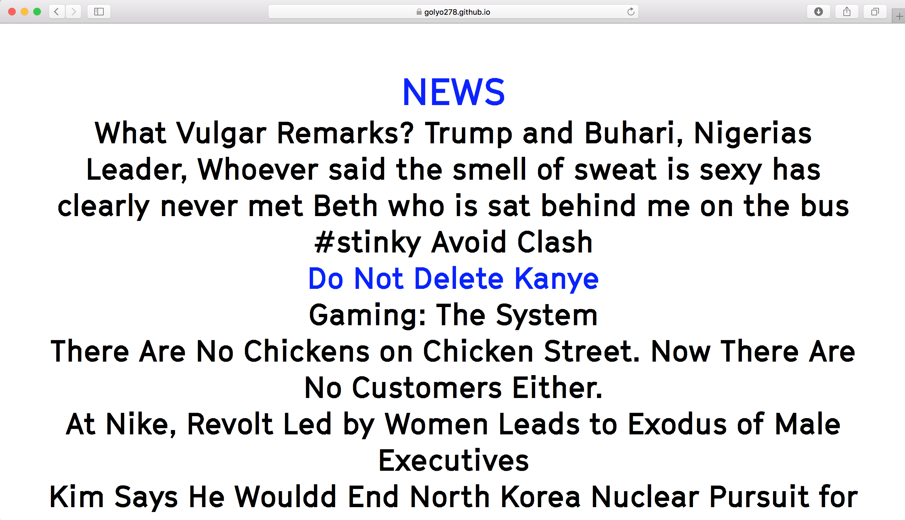
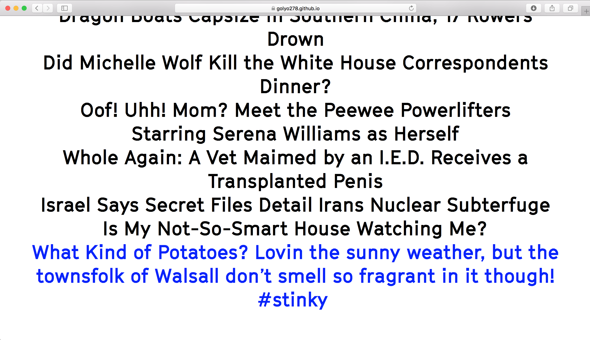
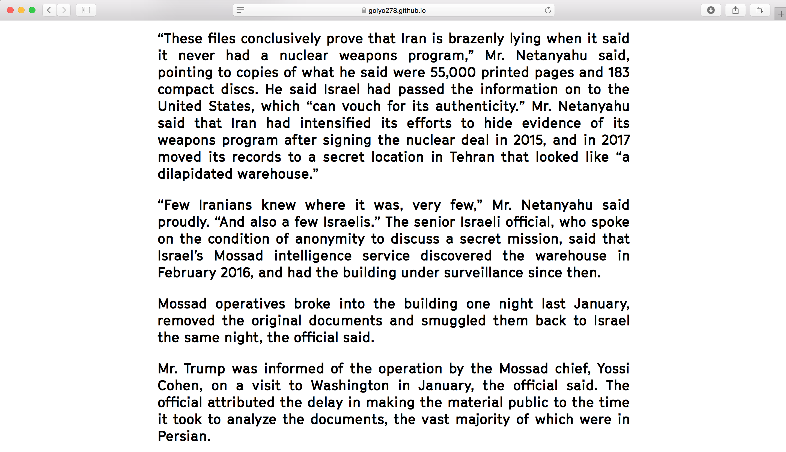

Olive Burd
 







experimental digital publication, 2018
https://golyo278.github.io/dice/
Don’t believe everything you read on the internet! This publication mocks the excess of information we have on the internet by randomizing content, dicing together tweets and news, and blurring the line between what is trustworthy and what is not. The curated articles are seamlessly spliced with tweets in order to subvert what is real and what is not, poking fun at the excess of information we have on the web.